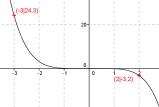

Aufgabe 74 Bestimmen Sie a und n so, dass eine Funktion der Form y = a*xn durch die Punkte (-3|24,3) und (2|-3,2) geht. Punktkoordinaten eingesetzt : x1 = -3, y1 = 24,3 24,3 = a * (-3)n (1) x2 = 2, y2 = -3,2 -3,2 = a * 2n (2) Aus (1) : 24,3 = a * (-3)n |:(-3)n 24,3 a = ------- (-3)n Eingesetzt in (2) 24,3 -3,2 = -------- * 2n |*(-3)n (-3)n -3,2 * (-3)n = 24,3 * 2n |:(-3,2) 24,3 (-3)n = - ------- * 2n |:2n 3,2 (-3)n ------ = -7,59375 2n (-1,5)n = -7,59375 Mit -7,59375 = (-1,5)5 (-1,5)n = (-1,5)5 Exponentenvergleich : n = 5 In (2) eingesetzt: -3,2 = a * 25 -3,2 = a * 32 |:32 a = -0,1 y = -0,1 * x5 